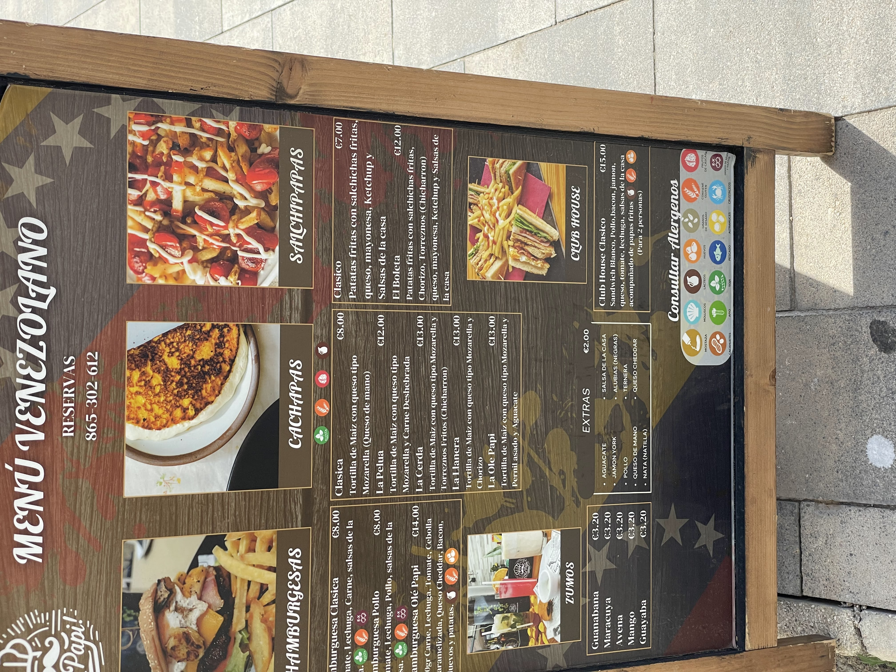
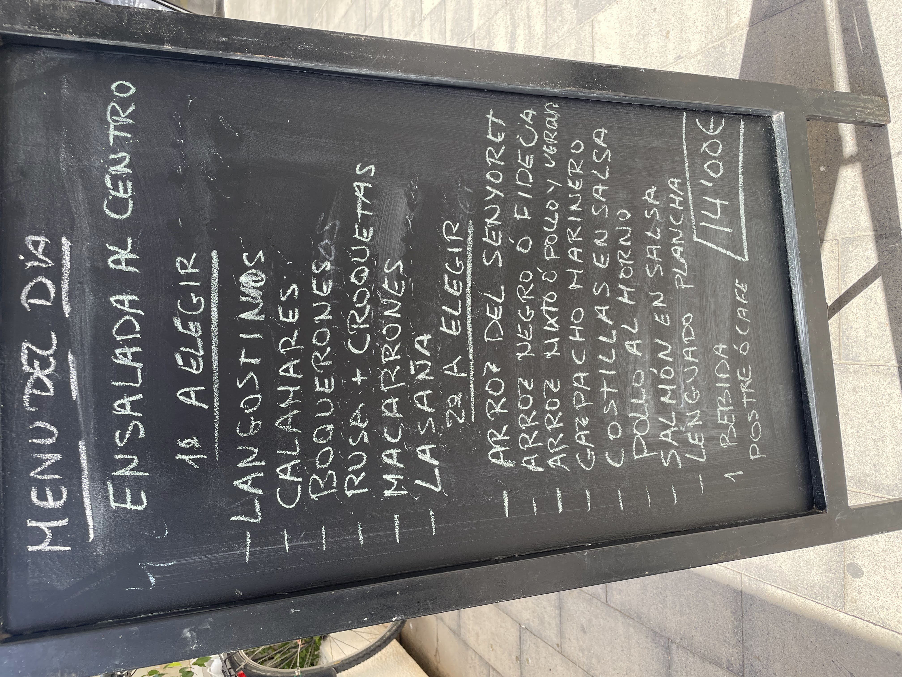
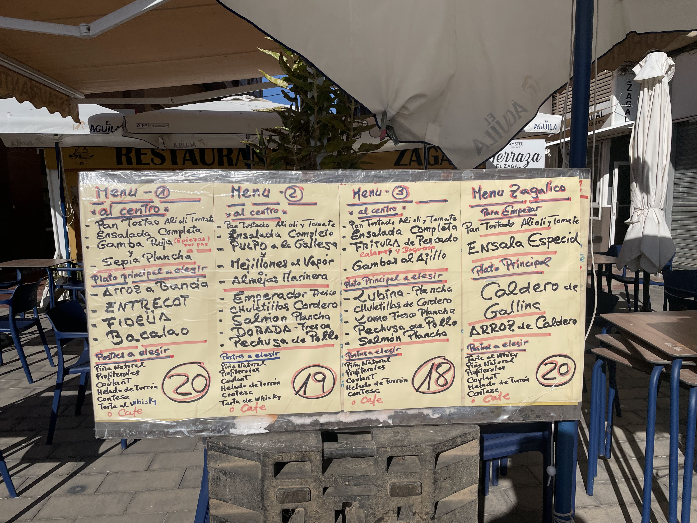
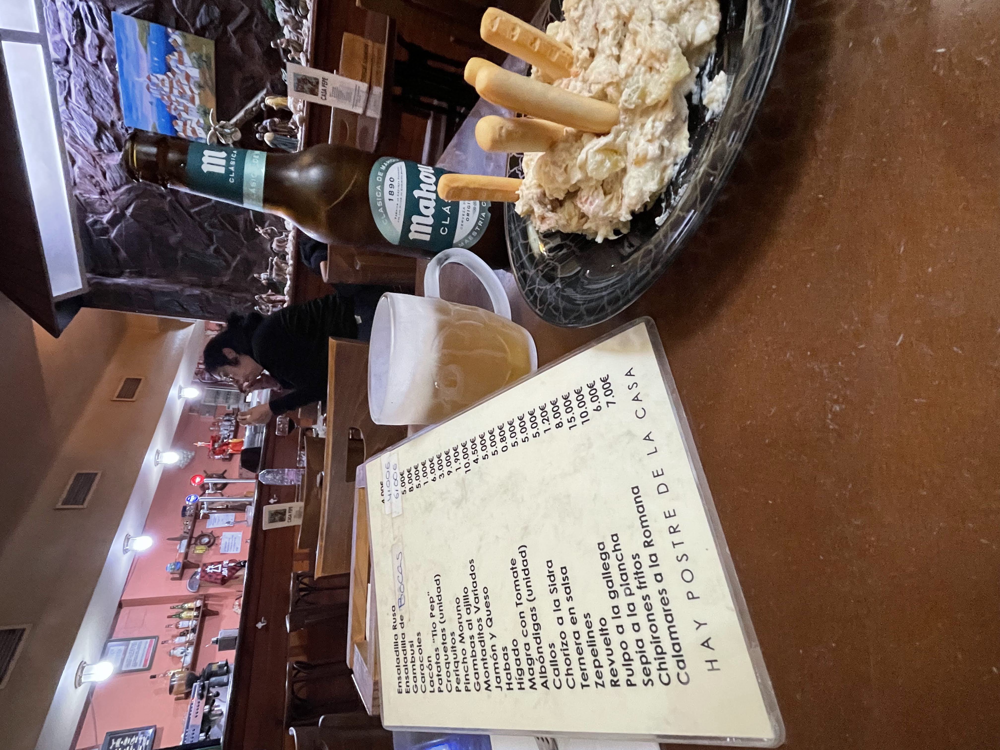

OCR Test with Sample Images
Sample Images
IMG_8947.jpg (Printed Menu)

Test OCR
IMG_8768.jpg (Handwritten Chalkboard)

Test OCR
IMG_8289.jpg (Restaurant Board)

Test OCR
IMG_8203.jpg (Angled/Reflection)

Test OCR